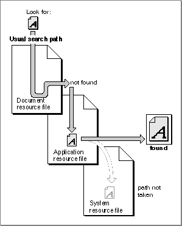
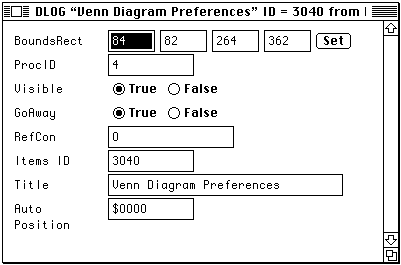
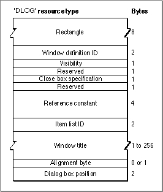

About Resources
An experienced Macintosh programmer might cringe at several features of the GreetMe source code shown in Listing 1-1 on page 3. One of the main sins it commits is this line:gString := 'Hello, world!';The problem with this line is that it includes, as part of the source code of the application, the message string that is to be displayed in the output window. While such an intermixing of code and data might be standard in some programming environments, it's definitely nonstandard in the Macintosh environment. To change the message, or to produce a version of the message in a different language, you'd need to change the source code and recompile the application. It would be better to isolate the changing data (the message string) from the application's code.When you're programming on the Macintosh, you can do this by creating a resource that contains the message string. A resource is any collection of data having a defined structure that is stored in a file designed to hold resources, known as a resource file. Then you can read the message string from the resource file using a call like this:
GetIndString(gString, kMessages, kGreetingString);TheGetIndStringprocedure reads the resource of type'STR#'that has the resource IDkMessagesin an open resource fork. This type of resource contains a string list, which is a sequential list of Pascal strings. ThenGetIndStringselects the string having the index kGreetingString. If there are at least that many strings in the string list, it puts the appropriate string into the first parameter (in this case,gString).The resources used by an application can be created and changed separately from the application's code. This separation is the main advantage to having resource files. A change in a simple greeting or in the title of a menu, for example, won't require any recompilation of code, nor will translation to another language.
- Note
- The
GetIndStringprocedure is not part of the Resource Manager, but it does call the Resource Manager. Many Toolbox and Operating System routines internally call the Resource Manager to retrieve information from resources.
- IMPORTANT
- Properly written Macintosh applications should store all language- or location-sensitive data as resources, so that localization is largely a matter of editing the application's resources.

Resource Paths
At any given time during your application's execution, there are usually two or more open resource files from which you can read information. The system resource file is opened by the Operating System at startup time. It contains standard resources, called system resources, shared by all applications. Among these are icons, fonts, sounds, and other collections of data. The system resource file also contains a number of code resources that you call indirectly to help create the standard Macintosh user interface. For example, the standard appearance and behavior of pull-down menus is governed by a menu-definition procedure, stored as a resource of type'MDEF'in the system resource file. The system resource file also contains code resources that help you create standard windows and controls.Your application's resource file is opened when your application is launched. You can call the
CurResFilefunction early in your application's execution to get the reference number of your application's resource file.gAppsResourceFile := CurResFile;You need to keep track of your application's resource file because the Resource Manager always looks for resources in the current resource file, which can change. Each time you open a resource file, it becomes the current resource file. You're likely to open a number of different resource files at various points in your application's execution. For instance, many applications store the user's general preferences in a resource file in the Preferences folder in the System Folder. In addition, if your application supports document files, you'll probably store some of the document's settings in the document's resource file. Table 3-1 summarizes the typical locations of resources used by an application.When searching resource files, the Resource Manager generally begins with the most recently opened one. When you ask it to open a resource of a particular type and ID, it first looks in the current resource file. If the Resource Manager doesn't find the specified resource there, it then looks in the resource file opened just before the current resource file. As long as the resource remains unfound, the Resource Manager continues until it reaches the last resource file in the chain, which is probably the system resource file. If the specified resource isn't there either, the Resource Manager gives up and notifies your application that the resource can't be found.
Figure 3-1 illustrates a typical search path followed by the Resource Manager as it looks for a particular font.
Figure 3-1 Searching for a resource

In general it's best not to rely too much on the Resource Manager's ability to search through open resource files; instead, you should explicitly set the appropriate resource file as the current resource file (by calling
- Note
- Unlike the system resource file and your application's resource file, a document's resource file is not automatically opened when you open the document's data fork. If you want to include a document's resource fork in the chain of open resource files, you need to open it explicitly (for instance, using the
HOpenResFileroutine).SetResFile) before you read or write any resource data. In addition, you can restrict the Resource Manager's search for a resource to the current resource file by using special Resource Manager routines. For example, instead of callingGetResource, you can callGet1Resource. This instructs the Resource Manager to look only in the first resource file in the chain of open resource files.Resource Types
As indicated above, resources are grouped logically by function into resource types. You refer to a resource by passing the Resource Manager a resource specification, which consists of the resource type and an ID number or a name. Any resource type is valid, whether one of those recognized by the Toolbox as referring to a standard Macintosh resource (such as a pattern), or a custom type created for use by your application.A resource type can be any sequence of four alphanumeric characters, including the space character. You can create resource types for your application, provided that they consist of all uppercase letters and do not conflict with the standard resource types already created. A resource type is defined by the
- Note
- The Resource Manager knows nothing about the formats of the individual types of resources. Only the routines in the other parts of the Toolbox and Operating System that call the Resource Manager have this knowledge.
ResTypedata type:TYPE ResType = PACKED ARRAY[1..4] OF CHAR;Table 3-2 lists the names and uses of some of the standard resource types used by the Macintosh system software. Uppercase resources are listed first.
- IMPORTANT
- Uppercase letters are distinguished from their lowercase counterparts in resource types. In addition, Apple reserves for its own use all resource types that include any lowercase letters. If you create custom resource types for use by your application, make sure that the type includes all uppercase letters.
You pick out a particular resource by specifying its type together with a resource name or a resource ID number. In general, it's best to use resource IDs because they're guaranteed to be unique within any given resource file. By contrast, it's possible to have two different resources of the same type with the same name.
Resource Structure
A resource file consists of a number of individual resources together with a resource map, an indication of where in the resource file the data for a given resource is to be found. You usually don't need to know about the structure--or even the existence--of the resource map. The Resource Manager uses it to keep track of a resource file's resources. If you lengthen or shorten a resource, or remove one from the resource file entirely, the Resource Manager takes care of modifying the resource map accordingly.Often, you don't even need to know about the structure of the individual resources you access in a resource fork. Sometimes you just need to open a resource and pass the handle you receive from the Resource Manager to some Toolbox routine. Here's an example:
FOR count := 1 TO 4 DO gEmptyPats[count] := GetPattern(kEmptyID + (count - 1)); FillRgn(myRegion, gEmptyPats[gEmptyIndex]^^);At application startup time, the Venn Diagrammer application reads the four available emptiness patterns from the application's resource file. Later, when it is drawing the current contents of the Venn diagram, it might fill a specified region with the current pattern. The application itself knows nothing about the actual structure of a pattern.Sometimes, however, you do need to know about the structure of the individual resources you want to use in your application. This is certainly true for any resources your application defines itself. Occasionally, you also need to know how the data in a system resource is structured. Inside Macintosh uses two general methods for displaying the structure of a resource's data: resource descriptions and resource diagrams.
The first method used in Inside Macintosh to describe the structure of a resource involves specifying a description in the Rez resource description language. Listing 3-1 shows the Rez input for a sample dialog box.
Listing 3-1 Rez input for the Preferences dialog box
resource 'DLOG' (rVennDPrefsDial, purgeable) { /*dialog resource*/ {84, 82, 264, 362}, /*rectangle for dialog box*/ noGrowDocProc, /*window definition ID for modeless dialog*/ visible, /*display this dialog box immediately*/ goAway, /*draw a close box*/ 0x0, /*initial refCon value of zero*/ rVennDPrefsDial, /*use item list with res ID rVennDPrefsDial*/ "Venn Diagram Preferences",/*window title*/ noAutoCenter /*don't automatically center the window*/ };Rez is a resource compiler: it takes a resource description like the one shown in
Listing 3-1 and produces a compiled resource. As you can see, the Rez description includes information about the desired dialog box, including the box's rectangle, window definition ID, and initial window title.Rez is provided as part of the Macintosh Programmer's Workshop (MPW) and as part of some third-party development environments. If you prefer, you can create and edit resources using tools like ResEdit, a graphic resource editor provided by Apple Computer, Inc. Using ResEdit, you'll create and modify resources in a slightly more friendly atmosphere, by manipulating windows like the one shown in Figure 3-2.
Figure 3-2 The ResEdit version of the Preferences dialog box

ResEdit uses an internal resource compiler to turn this graphic representation of a resource into a compiled resource.
Whether you use Rez or ResEdit's internal resource compiler to create resources, the compiled resource will have the same structure. This structure is sometimes depicted in Inside Macintosh using a resource diagram, as illustrated in Figure 3-3.
- Note
- For most purposes, and especially for programmers new to the Macintosh environment, ResEdit is a perfectly adequate tool for creating and editing resources. For information about using ResEdit to create resources, see ResEdit Reference. For complete information about using Rez to compile resource descriptions into resources, see Macintosh Programmer's Workshop Reference.
